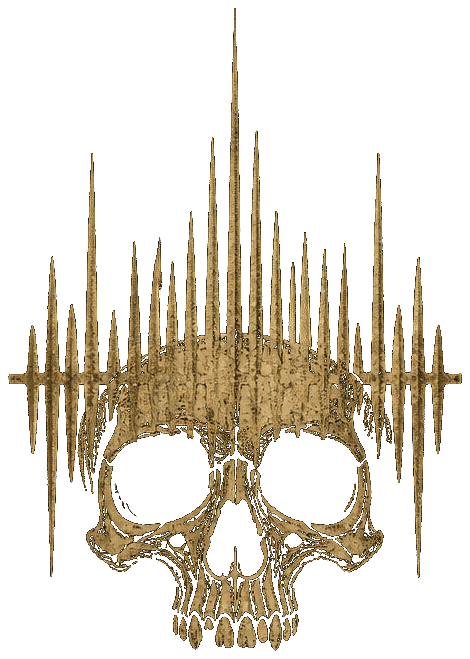

ADTOF
transforme arquivos de áudio em MIDI, que você pode importar direto no Reaper ou no Hydrogen

Arraste e solte seu arquivo de áudio aqui
ou
Como funciona
1. Envie seu áudio
Faça upload do arquivo de áudio que deseja converter.
2. Análise sonora
Nosso algoritmo extrai melodia, harmonia e ritmo do áudio.
3. Geração MIDI
Convertemos os dados analisados em um arquivo MIDI preciso.
4. Baixe seu MIDI
Receba o arquivo MIDI e utilize em seus projetos.